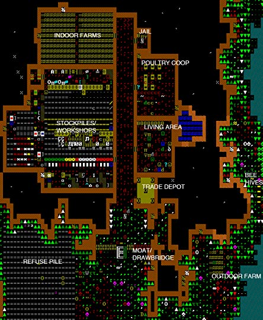
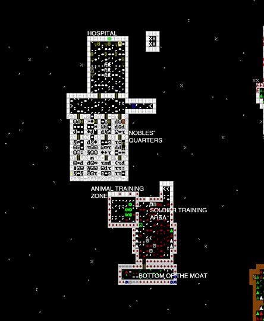

12 January 2023
Here are my thoughts on some game development or programming related books.
Getting Started with Dwarf Fortress: Learn to Play the Most Complex Video Game Ever Made
I highly recommend this book for anyone wanting to get into Dwarf Fortress. It's informative, funny, and will provide you with enough direction to get your first fort off the ground (or INTO the ground I mean...sorry). I don't know if I'll continue playing the game now that I'm done reading, as the game's fantasy setting and focus on dwarfs isn't really my thing (nor the brain-hurt), but working through this book has definitely been rewarding.
It will improve your perception of how societies function, giving you a birds eye view of humanity (well, dwarfity, technically). Which is invaluable to anyone seeking to better understand the world around them. (On closer inspection, you'll be getting an understanding of how the industries of yesteryear worked, but this can still be applied to the present.)
So this is useful not only for gamers but also for anyone who wants to learn about the world and gain a higher awareness about their place in it. Occasionally I felt like I was reading a history/geology/physics/etc. book.
I'd like to give a tour of the fort that this book helped me build:
This is the main floor. The stockpile/workshop room is really messy because one of my dwarfs, a weapon smith, got struck by a strange mood. Basically what this does is, the dwarf will go insane and start killing people if he is unable to build an object that he has been inspired to make. I did not have the stuff in place that the strange mood dwarf was demanding, so I had to quickly throw together a bunch of industries while the strange mood dwarf stood watching and screaming in his stupor. I even considered killing the dwarf, because I was having difficulty, but then I read his bio: "he detests snails, and was recently annoyed at having been accosted by snails." So hilarious! He needed to live. Luckily I was able to get everything together finally and the dwarf produced a legendary weapon! And he became a legendary weapon smith which undoubtably will be very useful. But as a result of that little scramble, the workshop room did become a victim of urban sprawl.
Also, there is vomit (the green) all over the drawbridge. The game warned me that a thief was lurking about, so I quickly raised the drawbridge. Unfortunately, one of my dwarves was on the bridge, and he got flung a couple yards and twisted his ankle badly.
(This is one level below the main floor.) Luckily, I had a hospital, so the injured dwarf got carried there where he is resting, along with my stone detailer. I don't know what happened to the stone detailer, as he spends all his time carving beautiful murals all over the nobles' quarters.
My soldiers' quarters are positioned right below the entrance of my fort, so they can spring out if there are any invaders.
Not shown in the above images: tree fell area, as well as two big rooms dug out below the above floor (the guide told me to dig them out so that eventually I could move my whole fort deeper underground. I didn't do that, but I did dig the holes 'cause digging holes is fun, and it got me the ore that eventually my strange mood dwarf used).
Anyway, this book is awesome. It's well-written, funny, and the comics and anecdotes gives you a sense of what the Dwarf Fortress community is like as well. If you follow its instructions, you will be able to set up a fort like mine and learn a lot along the way. In fact, there were sections in the book that I just glimpsed over - stuff about traps, engineering, minecarts, water-pumping - that I didn't incorporate into my fort, so you can make a better one.
Despite being published in 2012, the book is not significantly out of date; you will learn enough from this book that you will then be able to learn newly added things on your own. I definitely recommend the digital edition, as this guide would probably be harder to follow in grey-scale.
Superintelligence: Paths, Dangers, Strategies
Bostrom's relentless, abstract reasoning is impressive, but often hard to understand. The parts that are though are very insightful and interesting. You have to trust the author and his philosophic skills a lot.
I was surprised to never find a piece on the (possibly sub-optimal from our human point of view) possibility of machines developing their own machine values. Possibly Bostrom would find my question stupid and already answered, that the only "machine value" would be something like the paperclip maker example. Still in all its logicalness there was never mention of the idea that maybe human values are completely meaningless, as if the idea were completely taboo. Perhaps to mention it would be to completely invalidate the whole purpose of the book? As the assumption that human values are important is on what the whole book is founded?
I would not be completely against humans being wiped out and replaced by a race of machines, as long as said machines had values that were...complex? I would not like them to only want to create paperclips, but something humanlike would be fine. Then again, maybe all humans want to do is make more humans? Hmm. So anyway I agree with Bostrom that machines should have human values (since I AM a human). My ramblings here has been completely pointless :/
Then again, there's Kurzweil's idea, that there's nothing to fear at all, where through nanotech, brain augments, WBE, and such we BECOME the machines.
My favorite parts of the book were when Bostrom defined these really cool sounding (nominally and in definition) concepts, among which are "oracles, sovereigns, and genies"; "infrastructure profusion"; "perverse instantiation"; and "decisive strategic advantage." Those are probably what I will remember most from reading this.
Reality Is Broken: Why Games Make Us Better and How They Can Change the World
I read this book a few years ago, but here's my thoughts from what I remember (it has been a memorable book!).
As much as I hated McGonigal's style (the odd choice of listing the key points in the negative is something I think exemplifies her poor writing judgement), I did like the overall idea of the book (gameification). Her research in the field is more extensive than anyone else's, so there is value in her studies, as much as I dislike her approach, and her interpretation of it. It's an insult to everyone's intelligence that cartoon character faces are what makes gameification works. This is simply not the essence of games.
In my disagreement with McGonigal I find a lot of inspiration. So check back with me in 20 years and I'll have written my own thesis and a proper retort.
Rules of Play: Game Design Fundamentals
It basically just says that games are systems are and over. Flipping to a random page, here's an example: "It is clear that games are systems and that complexity and emergence affect meaningful play." Basically every sentence is like this, too abstract to mean anything. Absolutely horribly written and unpleasant to read. The authors are pretentious and have nothing actually to say. You WILL get a headache reading this; you WON'T ever be able to apply any of it.
It focuses a huge amount on giving "definitions" for things. In fact, it not only gives you the definition, but it gives you multiple definitions to allow you to follow the other's reasoning until he concludes, "yeah so if you just look at all these definitions that's the basic flavor of it." Oh yeah and usually the "definition" has the word "system" in it.
Don't buy this book.
Level Up!: The Guide to Great Video Game Design
Good if you're into the massively produced, tried and true game formulas, but more like junk food, with cheap humor, if you wanna get intellectual about game design. Unfortunately haven't found a good theory book like that yet.
A Theory of Fun for Game Design
This book gets a bonus star for being about a topic I really want to read about, but I was somewhat disappointed.
The author kept touting his accomplishments, his game dev experience, his music experience, his art experience, and writing experience (despite being mediocre in the latter two). The writing was whimsical, like flipping through a coffee table book, each page usually standing on its own, with illustrations.
I found annoying the somewhat irrelevant but constantly mentioned references to human social hierarchy and Freud.
Despite my complaints, it was a good book, and I would definitely recommend it to anyone interested in game design.
Pilgrim in the Microworld
I'm glad to have read this seminal work. Mostly glad because it means I won't have to read it again. It was not a fun read, but somehow remains clout with me for its rave reviews and general renown for being the first book that looked at video games. In my personal opinion, this book is not worth reading at all. It is only my recognition of my own flaws that I consider myself unfit to judge it worthless, and so finished it anyway.
It is incredibly boring and hard to understand. Rereading a section will not help you grasp it no matter how many times. This is caused both by the difficulty of describing events in an abstract game world, but also by the author's complete non concern with being comprehensible. Abounding with pseudo-philosophy, Sudnow begins every other sentence with "And the most vital aspect was . . ." or "The whole trouble arose out of . . ." These buzz words are irritating.
Yes, Sudnow did go to Atari headquarters and "interviewed" the engineers. Then throughout the rest of the book he complains of not having asked them anything of any value (e.g. history of atari, development of Breakout).
His lack of knowledge about these things becomes incredibly annoying, as he philosophizes about how Breakout was engineered to take money as efficiently as possible. Sudnow clearly has no idea how computers work. Nor is he an authority on anything else, except piano (which admittedly is possibly somewhat relevant).
Flipping to a random page and finding a typical example of "philosophy": "It's as if instead of truly incorporating the events on the screen within the framework of the body's natural way of moving and caring, the action on the screen must incorporate me, reducing me or elevating me to some ideal plane of synaptic being through which the programmed coincidences will take place." What is this garbage? It's like William Faulkner having a stroke.
Sudnow spends pages explaining how Breakout must have been engineered, and the thought-processes that must have been behind it. This is incredibly irritating because a) Sudnow is not a computer scientist and b) he did not take advantage of his trip to Atari to ask the actual engineers anything about it. Basically, he's plain wrong and doesn't know shit about the thoughts he's unintelligibly spilling.
The reflections on the impact of the new "microworld" is so quaint, and also so overblown. I would like to see what Sudnow would say about modern video games, with how far they've gone past Breakout. It would probably be too overwhelming for Sudnow, considering his reaction to ancient tech in this book. If Sudnow were to write a second book about modern gaming, it would probably span thousands of pages, and Sudnow would realize how inadequate his first book was.
Sudnow spends one of the longest chapters of the book "Practice" trying the same strategy over and over for months on end and not getting any better. It is actually painful to read about, but luckily he stops. He finally realizes that just playing the game more loosely is more fun and makes you a better player. To accept the challenge for what it is, he says. If there is one takeaway from this book, it is this: don't get stuck on one particular thing or you'll lose your mind and not go anywhere, and have absolutely nothing to show for it.
The intelligible bits were somewhat intriguing. They were a breath of air that made you realize you weren't stupid and could understand words when they were arranged properly. They add one star to make this book 2/5 stars.
Synthetic Worlds: The Business and Culture of Online Games
This book was great. And throughout the book the author really had something to say. There are no long lists of statistics as can be the filler in many nonfiction type books. There couldn't be, even if the author wanted to, though: he is a bit of a pioneer on this subject. He asks interesting questions and then answers them.
Probably the best parts of this book is where Castronova applies economics to the subject of online video games. I loved particularly the section about "fun" economic systems, and what world designers can do to make their worlds' economic systems "fun." After all, Castronova is an economist.
Castronova talks about a "fun" economy and also the idea of “sources” vs. “sinks.” These things are not present in the real world economy, only in synthetic ones; their closest analog would be . . . GDP vs. exports? I find it interesting that when you get proficient enough in the subject of economics (Castronova has a PhD), you can apply economic reasoning so imaginatively.
I also liked his explorations into other areas. I found his reflections about his personal experiences in virtual worlds to be insightful and fun to read.
The only criticism I have is for the focus on avatars. I think that the potentials for online community exists within but also far outside where people are represented by cartoon bodies. The author for some reason really seems to like avatars, claiming that they are so great that they could replace video-chat.
Video Game Storytelling: What Every Developer Needs to Know about Narrative Techniques
Note that this book is mostly about creating a story working as a team. While this perspective was interesting and nice to see, it detracted from what it could have been. It's just too "practical." I may be a bit of an introvert, but anyone can see the draw of designing your own story without having to deal with the chaos of a AAA game design team. This is why I prefer playing and making indie games.
For what it was though, it did a good job of it.
Replay: The History of Video Games
This book does exactly what the title says. It "Replays" the last 50 years of video game history. At 500 pages, that's about 10 pages per year. And it really is smoothed out like that. Very comprehensive.
4 December 2021
Here is a template for a blog. There are multiple pages set up for when out of space: "1.html", "2.html", etc.